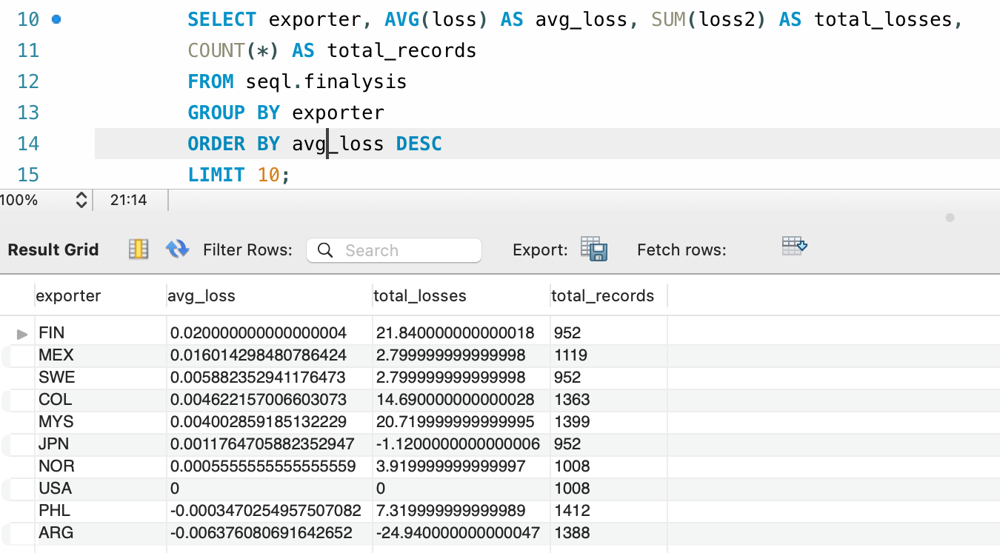
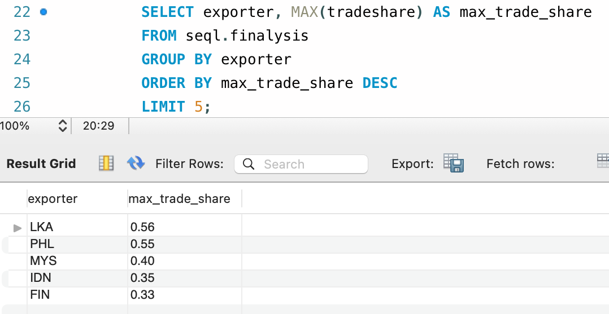
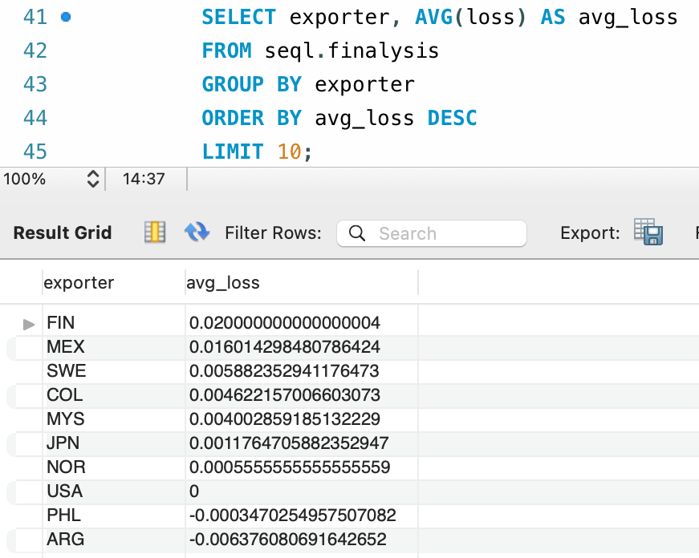
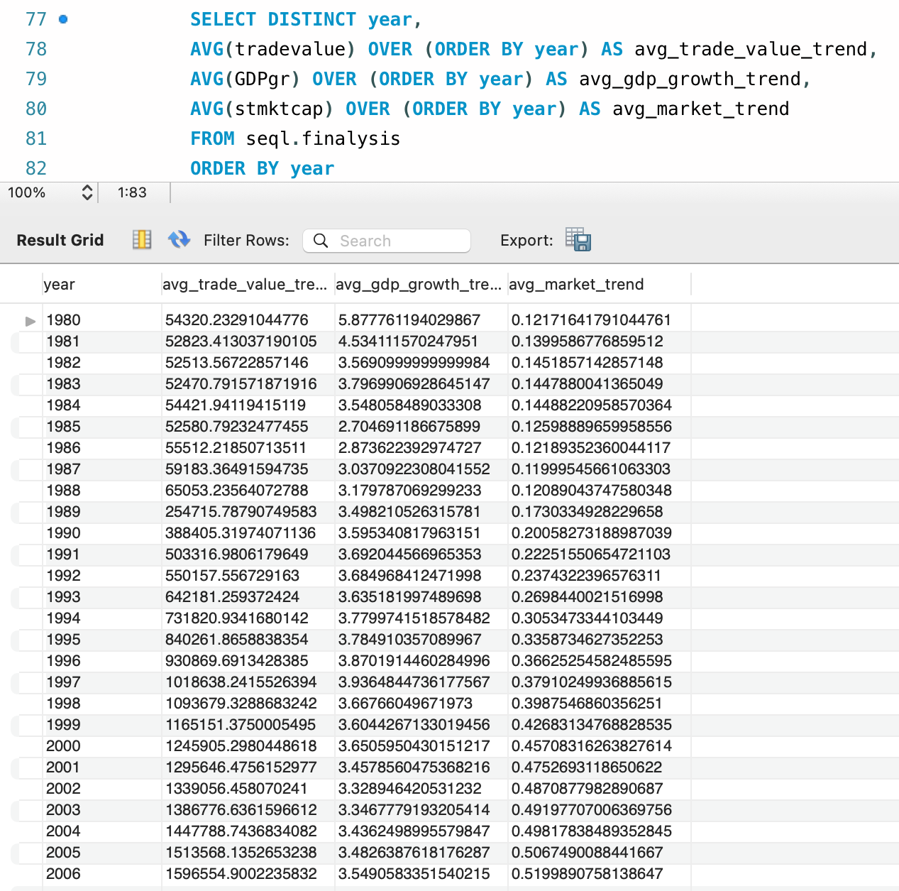

An analysis of financial data to uncover trends and correlations and gain insights into trade dynamics, economic growth, and market capitalization over time.
Features in the dataset relevant to this project include:
year: The year for the recorded financial data.
exporter: The country or entity that exports goods or services.
tradevalue: The total monetary value of goods and services traded.
tradeshare: Total trade attributed to individual exporters.
stmktcap: Total market capitalization of stocks, reflecting the market value of all traded shares.
RecessionAbroad: Binary indicator (1 or 0) signifying whether there was a recession in foreign countries during the specified year.
GDPgr: The annual growth rate of gross domestic product, reflecting the economic performance of a country.
loss: Financial loss for an exporter or entity.
loss2: An adjusted measure of financial loss, including adjustments like total sum for enhanced accuracy
CREATE TABLE seql.finalysis AS
SELECT * FROM seql.finance1;
Create a new table named finalysis as a copy of the finance1 table.
SELECT year, exporter, SUM(tradevalue) AS total_trade_value
FROM seql.finalysis
GROUP BY year, exporter
ORDER BY year, total_trade_value DESC;
The total trade value for each year and exporter.
The output shows the total trade value for each exporter, ordered by year, from highest to lowest and trade value within each year
SELECT exporter, AVG(loss) AS avg_loss, SUM(loss2) AS total_losses,
COUNT(*) AS total_records
FROM seql.finalysis
GROUP BY exporter
ORDER BY avg_loss DESC
LIMIT 10;
Top 10 exporters with the highest average loss. This helps in identifying exporters with the most significant financial losses and assessing their financial risk.

SELECT AVG(tradevalue) AS avg_tradeval
FROM seql.finalysis;
Output: 1596554.9002235823
Average trade value in the dataset.
SELECT exporter, MAX(tradeshare) AS max_trade_share
FROM seql.finalysis
GROUP BY exporter
ORDER BY max_trade_share DESC
LIMIT 5;
Top 5 exporters with the maximum trade share

SELECT year
FROM seql.finalysis
WHERE RecessionAbroad = 1
GROUP BY year;
Output:
1983
1992
1985
1986
Years when a recession occurred.
SELECT AVG(GDPgr) AS avg_GDP_growth_during_recession
FROM seql.finalysis
WHERE RecessionAbroad = 1;
Output: 1.19
The average GDP growth during recessions.
SELECT exporter, AVG(loss) AS avg_loss
FROM seql.finalysis
GROUP BY exporter
ORDER BY avg_loss DESC
LIMIT 10;
Output:
The Average loss for each exporter. Top 10 exporters.

SELECT
(SUM((tradevalue - avg_tradevalue) * (stmktcap - avg_stmktcap)) / (COUNT(*) - 1)) /
(SQRT(SUM(POW(tradevalue - avg_tradevalue, 2)) / (COUNT(*) - 1)) *
SQRT(SUM(POW(stmktcap - avg_stmktcap, 2)) / (COUNT(*) - 1))) AS trademrk_corr
FROM seql.finalysis,
(SELECT AVG(tradevalue) AS avg_tradevalue, AVG(stmktcap) AS avg_stmktcap FROM seql.finalysis) AS avg_vals;
Output: 0.1883602086608888
Correlation between trade value and market capitalization.
1 means it is a perfect positive correlation (as one variable increases, the other variable also increases).
-1 means its a perfect negative correlation (as one increases, the other decreases) and
0 indicates no correlation between the variables.
The output value of approximately 0.188 suggests a moderate positive correlation between trade value and stock market capitalization, indicating some relationship between the two variables.
Please note: While correlation between trade value and stock market capitalization suggests a relationship, it doesn't imply direct causation
SELECT
(SUM((GDPgr - avg_GDPgr) * (stmktcap - avg_stmktcap)) / (COUNT(*) - 1)) /
(SQRT(SUM(POW(GDPgr - avg_GDPgr, 2)) / (COUNT(*) - 1)) *
SQRT(SUM(POW(stmktcap - avg_stmktcap, 2)) / (COUNT(*) - 1))) AS gdpmrk_corr
FROM seql.finalysis,
(SELECT AVG(GDPgr) AS avg_GDPgr, AVG(stmktcap) AS avg_stmktcap FROM seql.finalysis) AS avg_vals;
Output: 0.10641330973476827
Correlation between GDP growth and market capitalization.
The value of 0.106 suggests a weak positive correlation between GDP growth and stock market capitalization, indicating a slight tendency for stock market capitalization to increase with GDP growth, but the relationship is not very strong.
SELECT
(SUM((GDPgr - avg_GDPgr) * (tradevalue - avg_tradevalue)) / (COUNT(*) - 1)) /
(SQRT(SUM(POW(GDPgr - avg_GDPgr, 2)) / (COUNT(*) - 1)) *
SQRT(SUM(POW(tradevalue - avg_tradevalue, 2)) / (COUNT(*) - 1))) AS gdptrade_corr
FROM seql.finalysis,
(SELECT AVG(GDPgr) AS avg_GDPgr, AVG(tradevalue) AS avg_tradevalue FROM seql.finalysis) AS avg_vals;
Output: -0.04532032598408335
Correlation between GDP growth and trade value
The value of -0.045 suggests a very weak negative correlation between GDP growth and trade value.
SELECT DISTINCT year,
AVG(tradevalue) OVER (ORDER BY year) AS avg_trade_value_trend,
AVG(GDPgr) OVER (ORDER BY year) AS avg_gdp_growth_trend,
AVG(stmktcap) OVER (ORDER BY year) AS avg_market_trend
FROM seql.finalysis
ORDER BY year
Total averages of trade value, GDP growth, and stock market capitalization to show trends over time from 1980 to 2006.
The data reveals trends in trade value, GDP growth, and stock market size over time, offering insights into shifts and patterns within the financial sector and providing a deeper understanding of market dynamics.